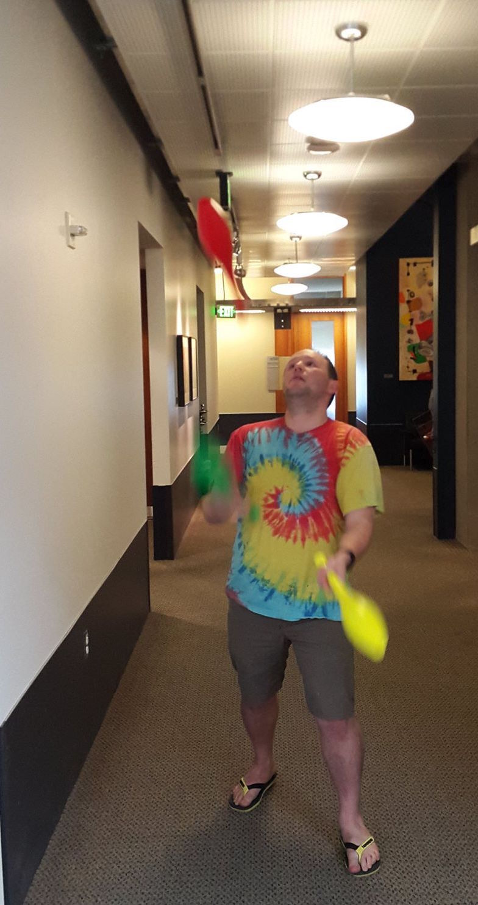
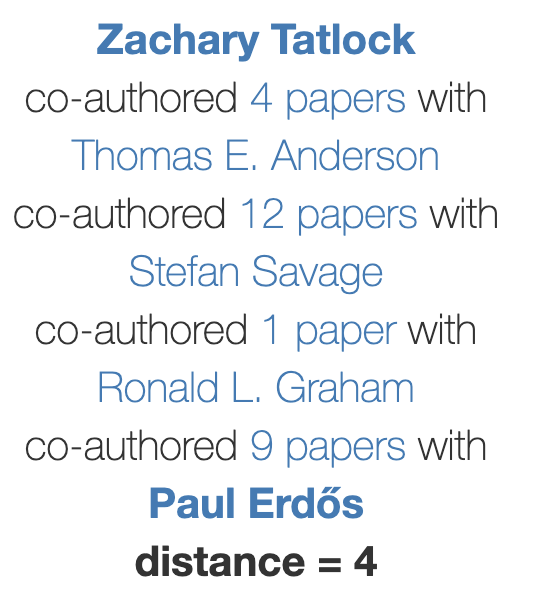

Zachary Tatlock / About
My research interests include compilers, term rewriting, numerics, formal verification, and computational fabrication. Outside of the lab, I help organize our running club, attempt small knitting projects, and practice cooking vegan food. I can juggle and solve Rubik’s cubes, but not at the same time. Also, my name has a wicked cool anagram.
I spent six sunny years at UC San Diego working on my PhD with my incredible advisor Sorin Lerner. Throughout grad school, Sorin set a stellar example of how remarkable doing research can be when you put students first, an example I strive to emulate. I also learned many invaluable lessons from the great Ranjit Jhala, especially when it comes to writing and presentation: less is more!
I graduated from Purdue University back in Spring 2007 with degrees in Computer Science and Mathematics. As an undergraduate, I was fortunate to work with Suresh Jagannathan on the SML compiler MLton. For our Honors Project, advised by Antony Hosking, my good friend Bill Harris and I designed and implemented a domain specific language to control a giant neon sculpture over the web. I also ran the lab component of Purdue’s introductory Java programming course for three years.
Miscellaneous Photos
We have a great running group, Race Condition Running, that trots all over Seattle and gets brunch each week.
I am a big fan of Baja hoodies. Luckily the UW PLSE faculty also have incredible fashion sense.
I help out with a bunch of stuff around the Allen School, including TGIF. Sometimes famous guests swing by :)

I also work with Hank Levy and Adriana Schulz to write the annual faculty skit where we dress up and try to take things a little less seriously.

There is always something happening in the Allen School; it can be tricky to juggle everything going on 🤹

Once while interning at MSR India, I got to drive an auto rickshaw.

Academic Ancestry
My academic genealogy has some interesting characters:
Erdős Number
The best bound I know for my Erdős number, is 4 via James:

or via Pavel:

or via Tom:

Collaborator Alphabet Soup: Gotta Catch ’Em All
I have been very fortunate to work on projects with many amazing collaborators. If your first name starts with:
F, Q, U
or your last name starts with:
I, U, V, X, Y
let’s write a paper together!
Conspiracy Theories
Did you know the clock on your wall is probably lying to you? If you thought daylight savings was bad, wait till you hear about timezones!